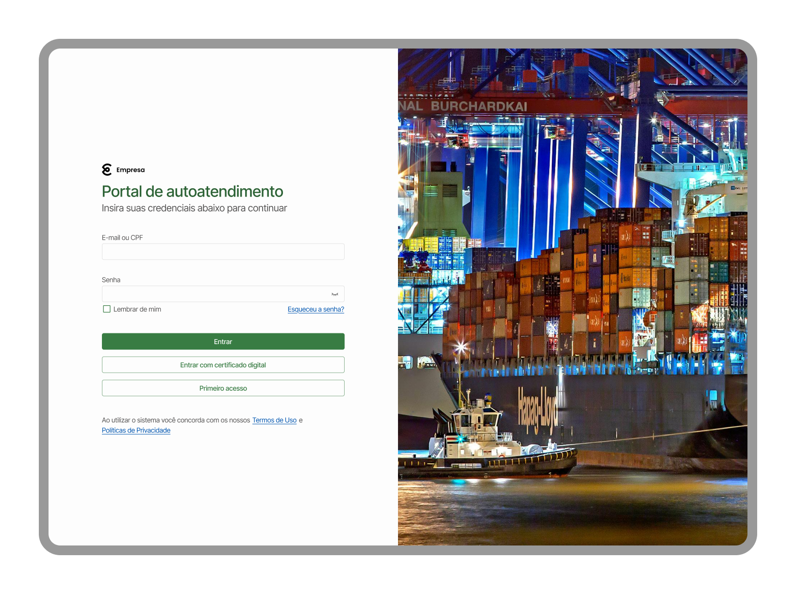
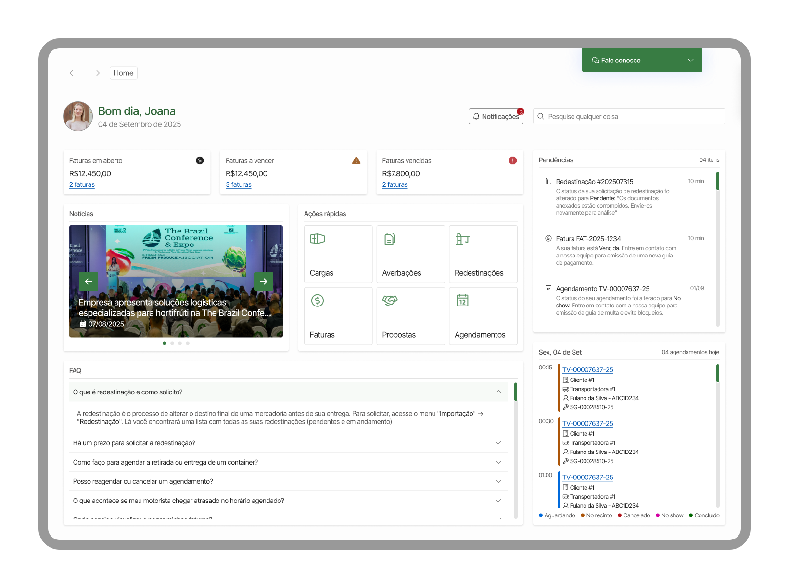
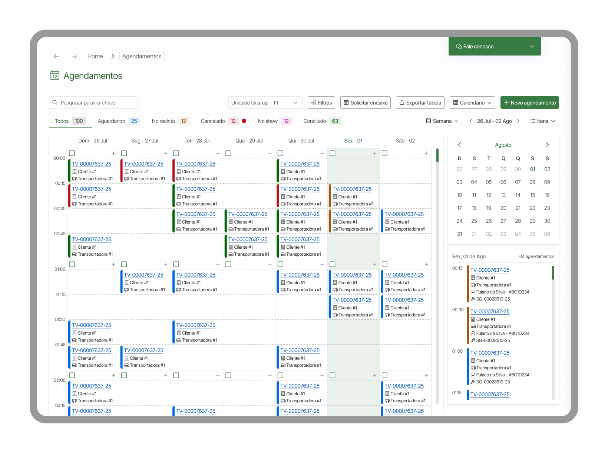

Portal de autoatendimento
Este case apresenta toda a jornada de discovery, entrevistas, desenvolvimento e testes do redesign de um portal de autoatendimento logístico, criado para facilitar as operações portuárias dos clientes de um terminal logístico.
Meu papel
Como designer de produto fui um dos responsáveis pela condução de entrevistas, análise de dados e geração de insights com auxílio de inteligência artificial, criação de protótipos navegáveis de alta fidelidade e condução de testes de usabilidade com usuários finais.
Desafio
Os principais desafios do projeto foram reformular a experiência do cliente dentro do portal de autoatendimento logístico e reduzir a alta dependência de ferramentas externas como telefones e e-mails para contato com o operador do terminal.
“O portal do cliente atual não oferece uma boa usabilidade e carece de funcionalidades relevantes.”
Benchmarking
De início realizamos um benchmarking competitivo para mapear funcionalidades percebidas em portais similares utilizados pelos usuários. Parte dos portais analisados entrou como sugestão do time interno.
| Funcionalidade competitiva | Boas práticas percebidas | Gaps identificados | Insights para o futuro |
|---|---|---|---|
| Agendamento | Centralização no portal | Rigidez no fluxo | Flexibilizar alterações |
| Faturamento | Pagamento digital | Baixa clareza | Mais transparência |
| Tracking de cargas | Timeline clara | Falta de alertas | Notificações proativas |
| Documentos | Fluxo único | Pendências invisíveis | Visibilidade clara |
| Comunicação | Registros formais | Excesso de e-mails | Possibilidade de chat integrado |
Pesquisa com usuários
Depois do estudo inicial iniciamos a fase de pesquisa com usuários para entender a experiência atual como um todo, investigar a jornada e identificar frustrações e pontos de melhoria.
Metodologia
Mapa de afinidade
Após a primeira rodada de entrevista, com um grande volume de dados, pudemos montar um mapa de afinidade que gerou evidências sólidas dos principais pontos de dor dos usuários.
Falta de visibilidade de status
- A carga está liberada?
- Existe algum bloqueio? Por quê?
- Em qual etapa está o processo?
- Qual caminho o usuário percorre?
“Ficamos o tempo inteiro às cegas.”
Comunicação complexa e reativa
- Informações críticas chegam tarde
- Falta de alertas automáticos
- Excesso de e-mails
“Eu recebo cerca de 60 e-mails por dia.”
Informações fragmentadas
- Relatórios pouco legíveis
- Falta de visão consolidada
- Dificuldade de tomada de decisão
“O portal não tem uma tela central que una tudo.”
Avaliação heurística
Em seguida iniciamos a nossa avaliação heurística onde identificamos falhas na aplicação das heurísticas de Nielsen que geravam um grande impacto na experiência dos usuários no sistema:
| Heurística | Problema identificado | Evidência | Impacto | Severidade | Oportunidade de melhoria |
|---|---|---|---|---|---|
| Visibilidade do status do sistema | Falta de clareza sobre bloqueios e liberações | Status sem indicar motivo ou próxima ação | Usuários precisam recorrer a e-mails ou telefone | Alta | Exibir motivo do bloqueio, etapa atual e ação necessária diretamente no portal |
| Visibilidade do status do sistema | Pendências documentais pouco visíveis | Documentos pendentes não são destacados visualmente | Atrasos operacionais e retrabalho | Alta | Criar destaque visual para pendências e priorização por criticidade |
| Reconhecimento em vez de memorização | Uso excessivo de ícones sem rótulos | Filtros e ações representados apenas por ícones | Usuários não entendem rapidamente o que cada ação faz | Média | Adicionar rótulos textuais ou tooltips explicativos |
| Consistência e padrões | Ações primárias apresentadas como links | Ações importantes aparecem como texto simples | Usuários não reconhecem ações principais | Média | Padronizar ações primárias como botões |
Prototipação
Com os dados limpos e insights consolidados iniciamos a fase de prototipação, gerando artefatos palpáveis que traduziram o trabalho da equipe de design em uma experiência interativa que abrange cerca de 20 fluxos de trabalho.
Objetivos
Redução de retrabalho operacional
Maior previsibilidade para os usuários
Visibilidade e clareza
Acompanhamento contínuo da operação
Comunicação proativa
Exemplos de fluxos




Testes de usabilidade
Por fim realizamos uma nova rodada de entrevistas com testes moderados para validar se a solução abordou os problemas da fase exploratória e identificar novos pontos de melhoria.
Forte interesse por tracking implementado
Forte interesse por relatórios personalizáveis implementados
Interesse em notificações configuráveis e em tempo real
Desejo de flexibilidade e facilidade de agendamento